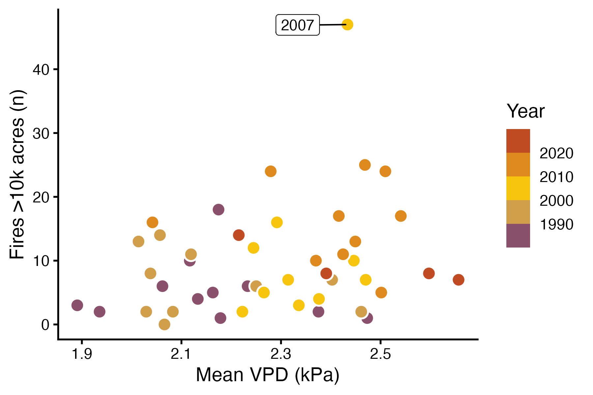
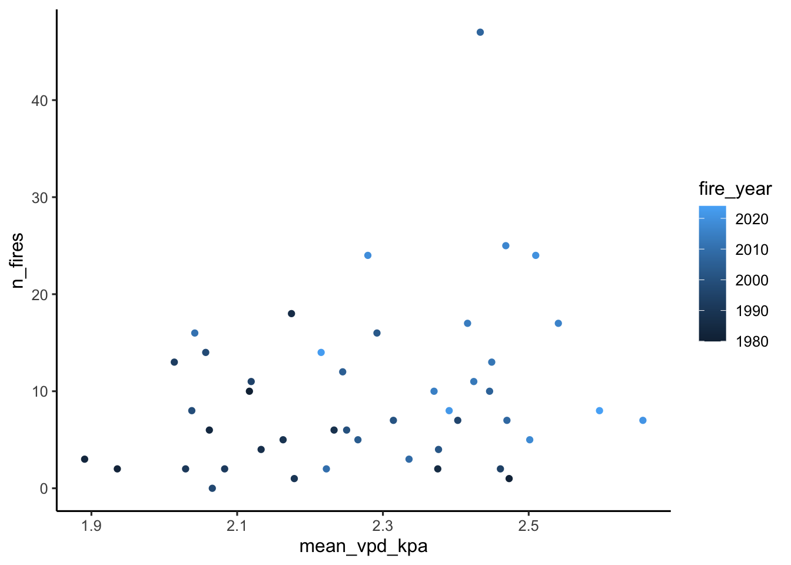
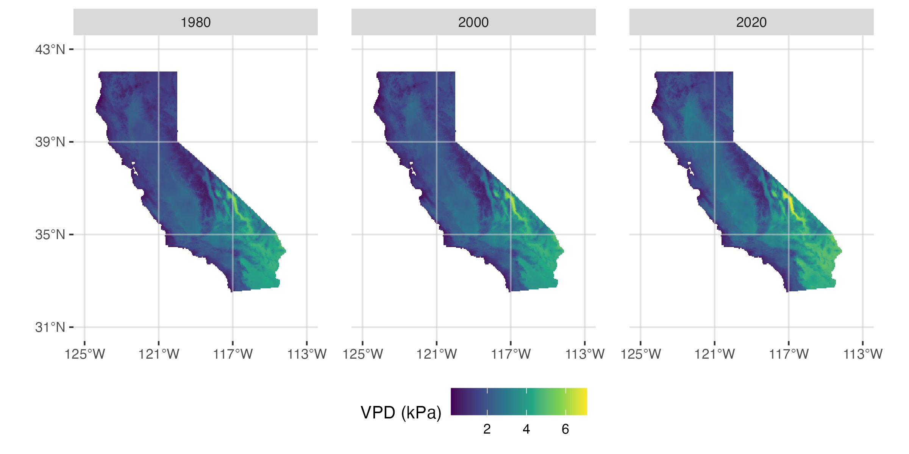
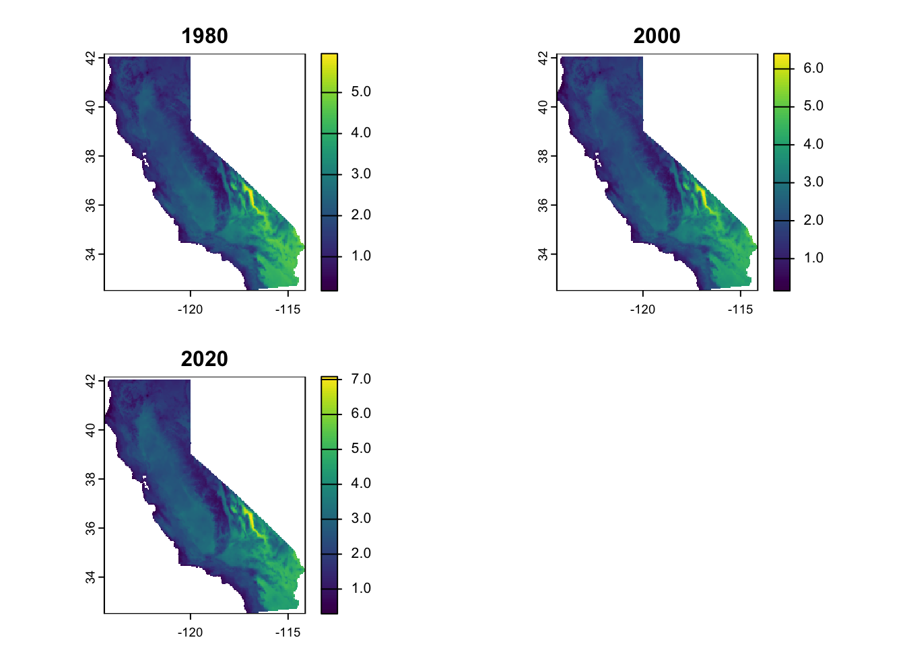
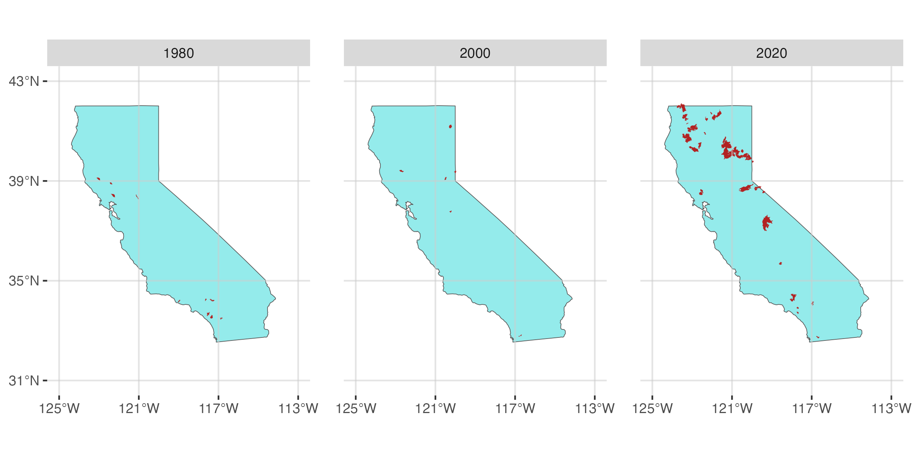

library(tidyverse)
library(terra)
library(tidyterra)
library(here)
theme_set(theme_classic(12))
set.seed(123)Lab 8
California Wildfire Occurrence
Learning objectives
In today’s lab you will…
- Fit a Poisson regression model to count outcomes
- Visualize predictions
- Compare properly and improperly specified models
Complete sections Poisson model notation and R code and Read and explore the data before lab.
Poisson model notation and R code
In statistical notation, Poisson models take the form:
\[ \begin{align} \text{CountOutcome} &\sim Poisson(\lambda) \\ log(\lambda) &= \beta_0 + \beta_1 \text{Predictor} \end{align} \]
In R, you can fit a poisson model like this:
poisson_model <- glm(count_outcome ~ predictor,
data = my_data,
family = poisson(link = "log"))Compare Poisson and logistic regression. Which of the following change between them?
Response family
Link function
Response
Predictor
Read and explore the data
Download and unzip wildfire.zip. Read the spatial and tabular data. This includes:
A wildfire shapefile
A vapor pressure deficit (VPD) raster
A table of annual vapor pressure deficit and wildfire data
wildfires <- read_csv(here("data", "wildfires","wildfires.csv"))Rows: 45 Columns: 3
── Column specification ────────────────────────────────────────────────────────
Delimiter: ","
dbl (3): fire_year, n_fires, mean_vpd_kpa
ℹ Use `spec()` to retrieve the full column specification for this data.
ℹ Specify the column types or set `show_col_types = FALSE` to quiet this message.vpd <-rast(here("data","wildfires","vpd.tiff"))Recreate the three figures below. Yours don’t have to be exact replicates, but they should communicate the same messages.
Figure 1: A scatter plot showing the relationship between vapor pressure deficit and wildfire occurence.

wildfires %>%
ggplot(aes(x = mean_vpd_kpa, y = n_fires, color = fire_year)) +
geom_point()
Figure 2: Maps of summer VPD in 1980, 2000, and 2020.

vpd_1980 <- vpd$"1980"
vpd_1980class : SpatRaster
size : 232, 247, 1 (nrow, ncol, nlyr)
resolution : 0.04166668, 0.04166668 (x, y)
extent : -124.4125, -114.1208, 32.50417, 42.17084 (xmin, xmax, ymin, ymax)
coord. ref. : +proj=longlat +ellps=WGS84 +no_defs
source : vpd.tiff
name : 1980
min value : 0.1704348
max value : 5.9472828 vpd_2000 <- vpd$"2000"
vpd_2000class : SpatRaster
size : 232, 247, 1 (nrow, ncol, nlyr)
resolution : 0.04166668, 0.04166668 (x, y)
extent : -124.4125, -114.1208, 32.50417, 42.17084 (xmin, xmax, ymin, ymax)
coord. ref. : +proj=longlat +ellps=WGS84 +no_defs
source : vpd.tiff
name : 2000
min value : 0.1522826
max value : 6.4034781 vpd_2020 <- vpd$"2020"
vpd_2020class : SpatRaster
size : 232, 247, 1 (nrow, ncol, nlyr)
resolution : 0.04166668, 0.04166668 (x, y)
extent : -124.4125, -114.1208, 32.50417, 42.17084 (xmin, xmax, ymin, ymax)
coord. ref. : +proj=longlat +ellps=WGS84 +no_defs
source : vpd.tiff
name : 2020
min value : 0.2905435
max value : 7.0836954 vpd_list <- c(vpd_1980, vpd_2000, vpd_2020)
vpd_listclass : SpatRaster
size : 232, 247, 3 (nrow, ncol, nlyr)
resolution : 0.04166668, 0.04166668 (x, y)
extent : -124.4125, -114.1208, 32.50417, 42.17084 (xmin, xmax, ymin, ymax)
coord. ref. : +proj=longlat +ellps=WGS84 +no_defs
sources : vpd.tiff
vpd.tiff
vpd.tiff
names : 1980, 2000, 2020
min values : 0.1704348, 0.1522826, 0.2905435
max values : 5.9472828, 6.4034781, 7.0836954 plot(vpd_list) 
Figure 3: Maps of wildfires in 1980, 2000, and 2020.

Fit model
Our question is:
How is the occurrence of wildfires in California associated with the previous summer’s vapor pressure deficit?
For more details about vapor pressure deficit and its relationship with fires, see @abatzoglou2016 and @seager2015.
Fit a poisson model to see how n_fires responds to mean_vpd_kpa.
Make predictions
As with logistic regression, the coefficients of a Poisson regression model are not terribly intuitive. Once again, we will interpret our model by visualizing predictions. Refer to lab 7 for details about how to generate predictions and CIs for a generalized linear model.
Generate predictions and a CI for the number of fires in the range of VPD values in the dataset.
Plot the raw data with the predictions. Your figure should look something like the figure below.

Compare properly and improperly specified models
Seeing a scatter plot of mean VPD and the number of fires in a year, an uncritical statistics student may think to fit a linear model. But the fact that the response is a count should suggest another approach is necessary. Contrast the model summary and predictions from your Poisson model against a linear model.
- Create a new model using
lm(). - Compare the summaries of your Poisson model and the linear model.
Is the coefficient formean_vpd_kpasignificant in both models? What does that mean for your inferences? - Use predictions and components of the linear model to answer the following questions.
What is the estimate for \(\sigma\) in your linear model?
What does the linear model predict \(\mu\) is when the VPD is at the minimum value in the dataset?
What is the 95% interval for the predicted number of fires for that mean and standard deviation (hint: useqnorm())?
Why doesn’t that interval make any sense?
Based on your answers to the questions above, why is using a properly specified model important?